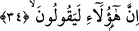
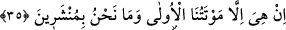

Denilmiştir ki: İkiz kardeşler vardı ve bunlar daha ana karnındayken sırtlarından
birbirlerine yapışıktılar. Büyüdüklerinde dillerinden şükrü eksik etmezlerdi. Onlardan
birisine başlarında böyle bir belâ varken neden şükrettikleri soruldu. Onlar; “Biz
biliyoruz ki Allah’ın bundan daha büyük belâları pek çoktur. Bu belâya sabrediyoruz ki
daha büyüğü ile karşılaşmayalım” diye cevap verdiler. Ansızın onlardan birisi öldü,
diğeri “ İşte şimdi daha büyük bir belâ meydana geldi” dedi. “Şimdi bu ölüyü kesip
benden ayırsalar ben de ölürüm, eğer kesip ayırmasalar, cesedi çürüyüp dökülene kadar
bu ölüyle beraber yaşamam gerekecek.” Hülâsa denilmiştir ki: Derviş olan kimse
herkesin yükünü çeken, fakat sûreten ya da mânen kimseden karşılık beklemeyen
kimsedir.
Belâya sabır, sıkıntıya tahammül göstermek gereklidir.
Bir değirmen taşı yuvarlansa bir dağdan
O taşın yolundan çekilen ârif olamaz
Sevdiği ve râzı olduğu işlere muvaffak kılan Allah’tır.
34. Şunlar (Kureyş kâfirleri) de diyorlar ki:
“Şunlar” Kureyş kâfirleri, çünkü söz Kureyş kâfirleri hakkındadır. Firavun ve
kavminin kıssası ise onların sapıklıktaki ısrarlarını misâllendirerek Firavun ve
kavminin başlarına gelen azâbın bunların başlarına gelmesinden onları sakındırmaya
delâlet etmek için zikredilmiştir.
35. “İlk ölümümüzden sonra bir şey yoktur. Biz diriltilecek değiliz.”
Onlara hayatlarının sonu ölüm ve tekrar dirilişten ibâret olan iki önemli iş olduğu
haber verilince işin sonunun yalnız ilk birinci ölümden ibâret olduğunu söyleyerek bunu
inkâr ettiler. Yani âkıbet, işin sonu dünyâ hayatını ortadan kaldıran ilk ve tek ölüm olup
artık bir daha dirilmek yoktur, demektedirler.
Ölümü birinci olarak nitelemek hasma ikinci bir ölümü ispât etmeyi gerektirmez.
Böyle bir ispâtı hemen inkâra yönelirler. Çünkü bir şeyin ilk olması, son olan şeyin ona
nisbetini mutlak mânâda gerektirmez. Meselâ bir kimse, sâhip olduğum ilk köle hürdür,
dese ve bir köleye sâhip olsa o kölenin âzâd edilmesi gerekir. Bundan sonra bir başka
köleye sahip olup olmaması fark etmez.